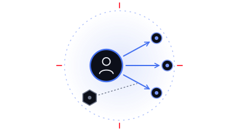
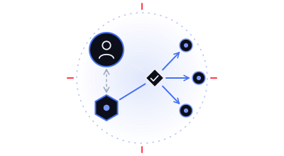
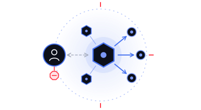
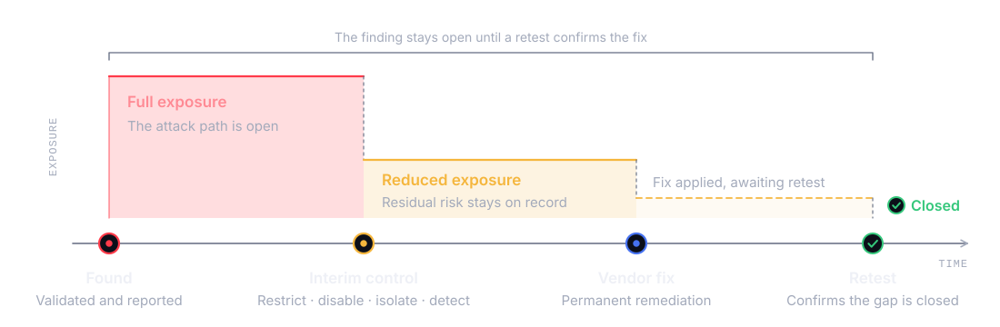
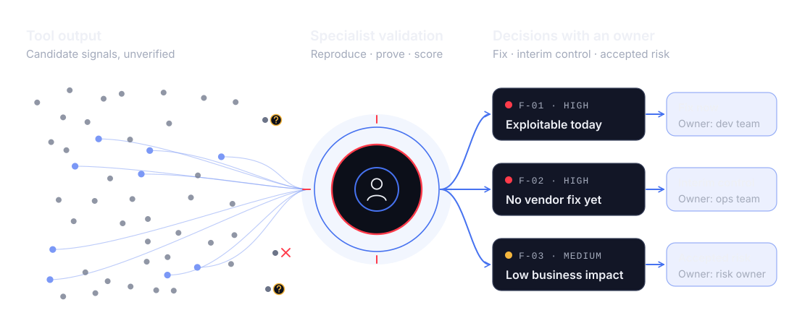

We lead the testing.
Specialists define the approach and direct the agent engine. Scope, access, testing windows and escalation are agreed with you before anything runs.
BlackHalo pairs AI-assisted testing with specialists who direct the work, judge what it finds and help you decide what to fix, what to protect right now and what to verify next.
Expert-operated · Scope-defined · Built around your team
BlackHalo didn't start as a product. It started as the working knowledge of a team that has spent more than ten years testing the security of aviation systems — a field where a single missed weakness is never acceptable, and every control has to be proven rather than assumed. We took all of it — the methodology, the attack playbooks, the habit of evidencing a finding before anyone acts on it — and built it into the platform. The bar is the same whether you fly aircraft, move money, run a hospital network or a production line: if your systems have to withstand the highest level of scrutiny, this is the discipline they were built against.

These figures are live from BlackHalo's public disclosure record.
Open the recordTools produce signals. Your team needs decisions. Before a finding reaches you, BlackHalo makes sure it carries three things.
Every finding is reproduced and arrives with its proof: the requests, the responses and a minimal proof of concept where it helps. If it can't be shown, it isn't reported.
Severity is scored with CVSS, then weighed against what the system does for your business and what an attacker would actually gain from it.
Each finding ends in a next step: the fix, an interim control while the fix is built, and the retest that proves it worked.
AI widens the reach.
Specialists lead the work.
BlackHalo is not software you buy and run on your own. It is the platform our specialists use to extend their reach, delivered with the people, process and support that turn results into decisions.
Specialists define the approach and direct the agent engine. Scope, access, testing windows and escalation are agreed with you before anything runs.
Every result is challenged, reproduced and ranked by what it means for your business, then explained with clear next steps.
Interim controls, remediation priorities and retests, within the scope you agree.
We can delegate actions. We cannot delegate accountability.
The level of automation should fit the engagement. We agree how the testing is directed, which tasks can run autonomously and where specialist approval is required. The modes differ in how individual testing tasks are carried out; the engagement itself is always led by a specialist.

Expert-directed investigation
Specialists lead the investigation and select each testing step, using BlackHalo's tools to support their work. Expert judgment stays closest to sensitive systems, complex decisions and the next action.

Specialist and AI, side by side
AI supports investigation and analysis while specialists steer the work, challenge the results and decide how to proceed. Execution follows the approvals and checkpoints agreed for the engagement.

Agent execution within agreed limits
Agents plan and carry out approved testing tasks within the agreed scope, operating policy and stop conditions, in environments where the engagement permits it. Specialists supervise, handle escalation and review every finding before delivery.
Choosing a mode never widens what is permitted. The agreed scope and the approval rules for live systems apply in every mode, and the right mode depends on the system and the actions it allows.
The reason most organisations hesitate to point an autonomous security tool at real systems is simple: they can't be sure it will stay inside the lines. Anything that can find a vulnerability can usually also act on it — reach further, touch production, move data — unless something stops it. BlackHalo is built so that it can't.
Every engagement runs inside an envelope you agree before any testing begins, and that boundary is enforced outside the testing agents' own control. Depth of investigation never quietly becomes permission to act — so capability can't turn into authority by accident.
What this buys you: you can let BlackHalo investigate deeply without betting your production environment, your customer data or your compliance posture on the hope that it behaves. The scope you sign is the scope it works in.
Talk through your boundaries
A finding is only worth something once it changes what your team does. Every engagement follows the same path.
AI-assisted search, steered by a specialist.
Reproduce it, prove it, score it.
Weigh the impact against your business.
Contain the risk while the fix is built.
Confirm the fix closes the gap.
Testing suggests that an access-control check may let a user reach records outside their role. The specialist decides which checks will confirm it, using test accounts inside the agreed boundaries and never touching real customer data.
A real fix needs time to build, test and ship. Until it lands, exposure can usually be reduced without waiting, and your system owners approve every change.
The same thinking drives our 90-day disclosure clock: vendors get time to fix, and the people running their software get the facts.
Discuss your current exposureInterim controls reduce exposure; they don't remove the vulnerability. The residual risk is written down, not hidden.

Reproduced, evidenced and scored, so nobody has to take them on trust.
Ranked by what matters to you, not by the order a tool printed them.
Fix, interim control or accepted risk, each with an owner and a next step.
Retests that show what is closed, what remains and what changed.
Every finding follows the same structure, so engineers can reproduce it and decision-makers can act on it without translating.
Illustrative example, not a customer report.
An assessment should fit the system in front of it — and keep pace with how fast that system changes.
From a fast pass that surfaces the obvious to a deep, exhaustive investigation that chases every path to ground. You decide how far an engagement goes; the standard of evidence behind a finding never drops with it.
Security isn't a once-a-year event. BlackHalo runs as a repeatable cycle — retest after each change or release, on the cadence you set — so your assurance keeps pace with your systems instead of ageing the day the report lands.
It's a platform for the systems, networks and organisations that must meet the strictest security standards — aviation, finance, healthcare, critical infrastructure. If "good enough" isn't good enough for you, that's who it's for.

You could point an autonomous scanner at your network tomorrow. What comes back is output — a stream of candidate findings, some real, some noise, with no one answerable for what it did while it ran or whether it stayed in scope. On systems that matter, that's a risk, not a result. BlackHalo is the other trade: the automation does the heavy lifting, and a specialist owns the boundary, the judgement and the result.

Three ways to work with the team behind BlackHalo. Each one starts with a scope you agree to.
A bounded scope: one application, service or change you need to be sure about.
Recurring testing for systems that keep changing.
Hypothesis-led research into the software you build or depend on.
Agreed before testing starts, and revisited whenever the scope changes.
A service. Our specialists use BlackHalo to run the engagement, interpret the results and support your response. If anything has to be deployed in your environment, it is part of the agreed setup and does not make your team responsible for running or interpreting it.
Keep your scanner: it is good at repeatable checks for known weaknesses. BlackHalo adds expert-led investigation, validated attack paths, business context and help with the response. Scanner output can even help shape the scope.
AI assists with investigation and analysis. Specialists set the objectives, supervise the testing, challenge the output and review every finding. Permitted actions, data handling and the AI arrangements are agreed per engagement. We own our deliverables; you keep your risk decisions and change approvals.
We help you assess interim controls such as access restrictions, configuration changes or disabling a feature, explain the trade-offs, verify that they work and document the residual risk. The finding stays open until it is properly remediated.
Sometimes. Suitability is assessed during scoping. Production testing needs agreed boundaries, testing windows, permitted techniques, escalation contacts and stop conditions, and some checks are better run in a representative test environment.
Your designated owners approve and implement changes, with our support as agreed. Continuous means recurring testing, review and follow-up on an agreed cadence or after selected changes. It is not round-the-clock monitoring or unlimited remediation support.
The once-a-year penetration test — a snapshot that's out of date before it's read — is ending.
We think offensive security is heading somewhere better: continuous, AI-driven testing that keeps up with systems that change every day; bounded by limits strong enough to run safely against real environments; and kept honest by experts who stay accountable for every claim. The machine widens the reach and never tires. The person keeps the judgement and the responsibility. BlackHalo is our bet on that future — and the public record on this site is us holding ourselves to it, in the open.
The brief is a short template for your message: topic, environment, objective, constraints and timing. Nothing is sent from this page.